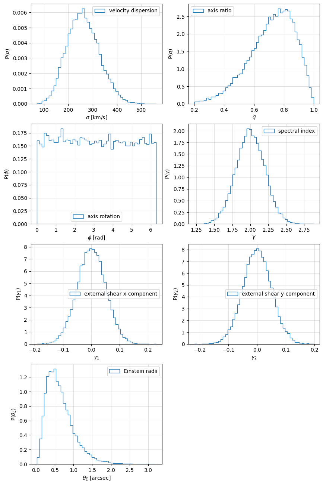
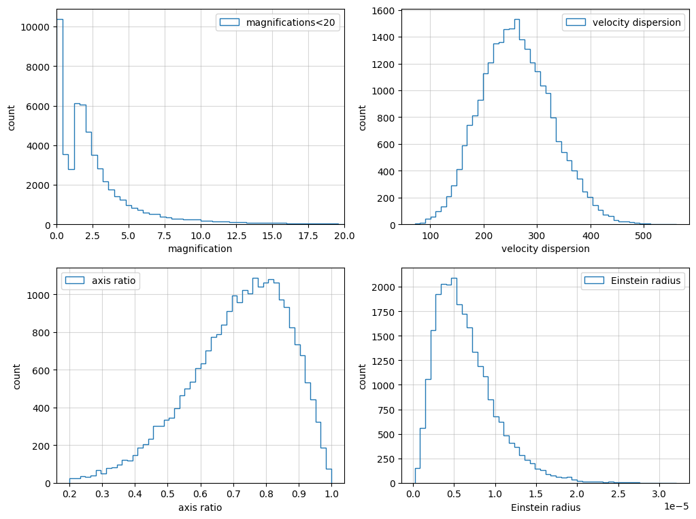

Lens parameter distributions
-
This notebook shows example how to use the
LensGalaxyParameterDistributionclass to create a distribution of lens galaxy parameters. -
You can change model or model parameters and compare the results.
[1]:
import numpy as np
import matplotlib.pyplot as plt
from ler.lens_galaxy_population import LensGalaxyParameterDistribution
Model 1
SIE model on optical depth
-
redshift dependent velocity dispersion
-
rejection sampled with SIE cross section
-
But the lens parameters are still EPL+Shear
[2]:
lens1 = LensGalaxyParameterDistribution(
npool=4,
z_min=0.001,
z_max=10.0,
cosmology=None,
event_type="BBH",
CBCSourceParameterDistribution_=False,
lens_type="epl_galaxy",
lens_functions
=dict(
cross_section_based_sampler="rejection_sampling_with_cross_section_SIE",
optical_depth="SIE",
),
lens_param_samplers=dict(
velocity_dispersion="velocity_dispersion_ewoud",
axis_ratio="axis_ratio_rayleigh",
),
lens_param_samplers_params=dict(
velocity_dispersion=dict(vd_min=0., vd_max=600.),
axis_ratio=dict(q_min=0.2, q_max=1.),
),
directory="./interpolator_json",
#create_new_interpolator=True,
)
z_to_luminosity_distance interpolator will be loaded from ./interpolator_json/z_to_luminosity_distance/z_to_luminosity_distance_0.pickle
differential_comoving_volume interpolator will be loaded from ./interpolator_json/differential_comoving_volume/differential_comoving_volume_0.pickle
merger_rate_density_bbh_popI_II_oguri2018 interpolator will be loaded from ./interpolator_json/merger_rate_density_bbh_popI_II_oguri2018/merger_rate_density_bbh_popI_II_oguri2018_0.pickle
z_to_Dc interpolator will be loaded from ./interpolator_json/z_to_Dc/z_to_Dc_0.pickle
Dc_to_z interpolator will be loaded from ./interpolator_json/Dc_to_z/Dc_to_z_0.pickle
angular_diameter_distance interpolator will be loaded from ./interpolator_json/angular_diameter_distance/angular_diameter_distance_0.pickle
differential_comoving_volume interpolator will be loaded from ./interpolator_json/differential_comoving_volume/differential_comoving_volume_0.pickle
velocity_dispersion_ewoud interpolator will be loaded from ./interpolator_json/velocity_dispersion_ewoud/velocity_dispersion_ewoud_0.pickle
SIE interpolator will be loaded from ./interpolator_json/SIE/SIE_0.pickle
Dl_to_z interpolator will be loaded from ./interpolator_json/Dl_to_z/Dl_to_z_0.pickle
[3]:
# sample all lens parameters and source parameters
lens_params1 = lens1.sample_lens_parameters(25000)
[4]:
# listing the parameters
lens_params1.keys()
[4]:
dict_keys(['zl', 'zs', 'sigma', 'q', 'theta_E', 'phi', 'e1', 'e2', 'gamma1', 'gamma2', 'gamma', 'geocent_time', 'ra', 'dec', 'phase', 'psi', 'theta_jn', 'luminosity_distance', 'mass_1_source', 'mass_2_source', 'mass_1', 'mass_2'])
[5]:
# getting the image properrties
lens_params_all1 = lens1.image_properties(lens_params1)
solving lens equations...
100%|███████████████████████████████████████████████████████| 25000/25000 [00:08<00:00, 2928.19it/s]
Redshifts
-
Source redshifts
-
Lens redshifts
[6]:
# lens redshifts
zl1 = lens_params1["zl"]
# source redshifts
zs1 = lens_params1["zs"]
# magnifications
mu1 = abs(np.array(lens_params1["magnifications"]).flatten())
mu_max = 20
mu1 = mu1[mu1<mu_max]
# velocity dispersions
sigma_all1 = lens_params1["sigma"]
# axis ratios
q1 = lens_params1["q"]
# Einstein radii
theta_E1 = lens_params1["theta_E"]
[7]:
fig = plt.figure(figsize=(4,4))
plt.hist(zl1, bins=50, histtype="step", label="lens", density=True)
plt.hist(zs1, bins=50, histtype="step", label="source", density=True)
plt.legend()
plt.xlabel(r"$z_s$")
plt.ylabel(r"P($z_s$)")
plt.grid(alpha=0.4)
plt.show()

[8]:
fig = plt.figure(figsize=(10,16))
ax = plt.subplot(421)
# velocity dispersions
sigma = lens_params1["sigma"]
ax.hist(sigma, bins=50, histtype="step", label="velocity dispersion", density=True)
ax.legend()
ax.set_xlabel(r"$\sigma$ [km/s]")
ax.set_ylabel(r"P($\sigma$)")
ax.grid(alpha=0.4)
ax = plt.subplot(422)
# axis ratios
q = lens_params1["q"]
ax.hist(q, bins=50, histtype="step", label="axis ratio", density=True)
ax.legend()
ax.set_xlabel(r"$q$")
ax.set_ylabel(r"P($q$)")
ax.grid(alpha=0.4)
ax = plt.subplot(423)
# axis rotation
phi = lens_params1["phi"]
ax.hist(phi, bins=50, histtype="step", label="axis rotation", density=True)
ax.legend()
ax.set_xlabel(r"$\phi$ [rad]")
ax.set_ylabel(r"P($\phi$)")
ax.grid(alpha=0.4)
ax = plt.subplot(424)
# spectral index
gamma = lens_params1["gamma"]
ax.hist(gamma, bins=50, histtype="step", label="spectral index", density=True)
ax.legend()
ax.set_xlabel(r"$\gamma$")
ax.set_ylabel(r"P($\gamma$)")
ax.grid(alpha=0.4)
ax = plt.subplot(425)
# external shear x-component
gamma1 = lens_params1["gamma1"]
ax.hist(gamma1, bins=50, histtype="step", label="external shear x-component", density=True)
ax.legend()
ax.set_xlabel(r"$\gamma_1$")
ax.set_ylabel(r"P($\gamma_1$)")
ax.grid(alpha=0.4)
ax = plt.subplot(426)
# external shear y-component
gamma2 = lens_params1["gamma2"]
ax.hist(gamma2, bins=50, histtype="step", label="external shear y-component", density=True)
ax.legend()
ax.set_xlabel(r"$\gamma_2$")
ax.set_ylabel(r"P($\gamma_2$)")
ax.grid(alpha=0.4)
ax = plt.subplot(427)
# einstein radii
theta_E = lens_params1["theta_E"]*1e5
ax.hist(theta_E, bins=50, histtype="step", label="Einstein radii", density=True)
ax.legend()
ax.set_xlabel(r"$\theta_E$ [arcsec]")
ax.set_ylabel(r"P($\theta_E$)")
ax.grid(alpha=0.4)
plt.show()

[9]:
fig = plt.figure(figsize=(12,14))
ax = plt.subplot(321)
ax.hist(mu1, bins=50, histtype="step", label="magnifications<20")
ax.legend()
ax.set_xlabel("magnification")
ax.set_ylabel("count")
ax.set_xlim(0, mu_max)
ax.grid(alpha=0.5)
ax = plt.subplot(322)
ax.hist(sigma_all1, bins=50, histtype="step", label="velocity dispersion")
ax.legend()
ax.set_xlabel("velocity dispersion")
ax.set_ylabel("count")
ax.grid(alpha=0.5)
ax = plt.subplot(323)
ax.hist(q1, bins=50, histtype="step", label="axis ratio")
ax.legend()
ax.set_xlabel("axis ratio")
ax.set_ylabel("count")
ax.grid(alpha=0.5)
ax = plt.subplot(324)
ax.hist(theta_E1, bins=50, histtype="step", label="Einstein radius")
ax.legend()
ax.set_xlabel("Einstein radius")
ax.set_ylabel("count")
ax.grid(alpha=0.5)
plt.show()

Model 2
SIS model on optical depth
-
redshift independent velocity dispersion (gengamma)
-
rejection sampled with SIS cross section
-
But the lens parameters are still EPL+Shear
-
axis ratio using Padilla and Strauss 2008
[10]:
lens1.available_lens_functions
[10]:
{'cross_section_based_sampler': ['rejection_sampling_with_cross_section_SIE',
'rejection_sampling_with_cross_section_SIS'],
'optical_depth': ['SIS',
'optical_depth_SIS_haris',
'optical_depth_SIS_hemanta',
'SIE',
'optical_depth_SIE_hemanta'],
'param_sampler_type': ['sample_all_routine']}
[11]:
lens1.available_lens_prior_list_and_its_params
[11]:
{'source_redshift_sl': {'strongly_lensed_source_redshifts': None},
'lens_redshift': {'lens_redshift_SDSS_catalogue': None},
'velocity_dispersion': {'velocity_dispersion_haris': {'a': 0.8689138576779026,
'c': 2.67},
'velocity_dispersion_gengamma': {'a': 0.8689138576779026, 'c': 2.67},
'velocity_dispersion_bernardi': None,
'velocity_dispersion_ewoud': None},
'axis_ratio': {'axis_ratio_rayleigh': {'q_min': 0.2, 'q_max': 1.0},
'axis_ratio_padilla_strauss': {'q_min': 0.2, 'q_max': 1.0},
'axis_ratio_SIS': None},
'axis_rotation_angle': {'axis_rotation_angle_uniform': {'phi_min': 0.0,
'phi_max': 6.283185307179586}},
'external_shear': {'shear_norm': {'scale': 0.05}},
'density_profile_slope': {'density_profile_slope_normal': {'mean': 2.0,
'std': 0.2}},
'source_parameters': {'sample_gw_parameters': None}}
[12]:
lens2 = LensGalaxyParameterDistribution(
npool=4,
z_min=0.001,
z_max=10.0,
cosmology=None,
event_type="BBH",
CBCSourceParameterDistribution_=False,
lens_type="epl_galaxy",
lens_functions=dict(
cross_section_based_sampler="rejection_sampling_with_cross_section_SIS",
optical_depth="optical_depth_SIS_haris",
),
lens_param_samplers=dict(
velocity_dispersion="velocity_dispersion_gengamma",
axis_ratio="axis_ratio_padilla_strauss",
),
lens_param_samplers_params=dict(
velocity_dispersion=dict(vd_min=0., vd_max=600.),
axis_ratio=dict(q_min=0.2, q_max=1.),
),
directory="./interpolator_json",
create_new_interpolator=True,
)
z_to_luminosity_distance interpolator will be generated at ./interpolator_json/z_to_luminosity_distance/z_to_luminosity_distance_0.pickle
differential_comoving_volume interpolator will be generated at ./interpolator_json/differential_comoving_volume/differential_comoving_volume_0.pickle
merger_rate_density_bbh_popI_II_oguri2018 interpolator will be generated at ./interpolator_json/merger_rate_density_bbh_popI_II_oguri2018/merger_rate_density_bbh_popI_II_oguri2018_0.pickle
z_to_Dc interpolator will be generated at ./interpolator_json/z_to_Dc/z_to_Dc_0.pickle
Dc_to_z interpolator will be generated at ./interpolator_json/Dc_to_z/Dc_to_z_0.pickle
angular_diameter_distance interpolator will be generated at ./interpolator_json/angular_diameter_distance/angular_diameter_distance_0.pickle
differential_comoving_volume interpolator will be generated at ./interpolator_json/differential_comoving_volume/differential_comoving_volume_0.pickle
velocity_dispersion_gengamma interpolator will be generated at ./interpolator_json/velocity_dispersion_gengamma/velocity_dispersion_gengamma_0.pickle
axis_ratio_spline_coeff interpolator will be generated at ./interpolator_json/axis_ratio/axis_ratio_spline_coeff_0.pickle
axis_ratio interpolator will be generated at ./interpolator_json/axis_ratio/axis_ratio_1.pickle
Dl_to_z interpolator will be generated at ./interpolator_json/Dl_to_z/Dl_to_z_0.pickle
[13]:
lens2.lens_param_samplers
[13]:
{'source_redshift_sl': 'strongly_lensed_source_redshifts',
'lens_redshift': 'lens_redshift_SDSS_catalogue',
'velocity_dispersion': 'velocity_dispersion_gengamma',
'axis_ratio': 'axis_ratio_padilla_strauss',
'axis_rotation_angle': 'axis_rotation_angle_uniform',
'external_shear': 'shear_norm',
'density_profile_slope': 'density_profile_slope_normal',
'source_parameters': 'sample_gw_parameters'}
[14]:
# sample all lens parameters and source parameters
lens_params2 = lens2.sample_lens_parameters(25000)
[15]:
# getting the image properrties
lens_params_all = lens2.image_properties(lens_params2)
solving lens equations...
100%|███████████████████████████████████████████████████████| 25000/25000 [00:08<00:00, 2938.84it/s]
[16]:
# lens redshifts
zl2 = lens_params2["zl"]
# source redshifts
zs2 = lens_params2["zs"]
# magnifications
mu2 = abs(np.array(lens_params2["magnifications"]).flatten())
mu_max = 20
mu2 = mu2[mu2<mu_max]
# velocity dispersions
sigma_all2 = lens_params2["sigma"]
# axis ratios
q2 = lens_params2["q"]
# Einstein radii
theta_E2 = lens_params2["theta_E"]
[17]:
fig = plt.figure(figsize=(12,14))
ax = plt.subplot(321)
ax.hist(zl1, bins=50, histtype="step", label="lens1")
ax.hist(zs1, bins=50, histtype="step", label="source1")
ax.hist(zl2, bins=50, histtype="step", label="lens2")
ax.hist(zs2, bins=50, histtype="step", label="source2")
ax.legend()
ax.set_xlabel("redshift")
ax.set_ylabel("count")
ax.grid(alpha=0.5)
ax = plt.subplot(322)
ax.hist(mu1, bins=50, histtype="step", label="magnifications1<20")
ax.hist(mu2, bins=50, histtype="step", label="magnifications2<20")
ax.legend()
ax.set_xlabel("magnification")
ax.set_ylabel("count")
ax.set_xlim(0, mu_max)
ax.grid(alpha=0.5)
ax = plt.subplot(323)
ax.hist(sigma_all1, bins=50, histtype="step", label="velocity dispersion1")
ax.hist(sigma_all2, bins=50, histtype="step", label="velocity dispersion2")
ax.legend()
ax.set_xlabel("velocity dispersion")
ax.set_ylabel("count")
ax.grid(alpha=0.5)
ax = plt.subplot(324)
ax.hist(q1, bins=50, histtype="step", label="axis ratio1")
ax.hist(q2, bins=50, histtype="step", label="axis ratio2")
ax.legend()
ax.set_xlabel("axis ratio")
ax.set_ylabel("count")
ax.grid(alpha=0.5)
ax = plt.subplot(325)
ax.hist(theta_E1, bins=50, histtype="step", label="Einstein radius")
ax.hist(theta_E2, bins=50, histtype="step", label="Einstein radius")
ax.legend()
ax.set_xlabel("Einstein radius")
ax.set_ylabel("count")
ax.grid(alpha=0.5)
plt.show()

[ ]: